I found Mexico City to be a chaotic, colorful, and beautiful city.
We landed in Mexico City (Ciudad de México, or CDMX) early Tuesday morning after a red eye flight from Los Angeles. Mexico City greeted us with the pungent, warm, and sweet aroma of garbage. The air pollution was noticeable, with hazy skies and the feeling that I was breathing in dust. The traffic was pretty wild too (think cars honking, weaving in and out of lanes along with motorcyclists), and almost reminded me of China and India (though not nearly to the level of India). But there’s a lot of greenery in the park, which I appreciated. It was noticeably warm even at 6am and would get warmer throughout the day. It was finally T-shirt and shorts/dresses season!
It was refreshing to see everything in Spanish and hear people speaking in Spanish. While my Spanish was quite rusty, it was nice to order food and remember how many words I had forgotten lol. One thing that struck me was how friendly everyone was. The waiters, cashiers, and receptionists were so patient and understanding as I struggled to communicate what I wanted. Many people could speak English, but replied to me in Spanish when I spoke to them in Spanish, which I really appreciated. I also got the sense that people here work hard and are hustlers. The street peddlers who make a living selling trinkets and food do not have it easy — they can be annoying at times, but at the end of the day they’re just trying to make ends meet and feed their families. I appreciated that they were less aggressive compared to other places I’ve been — they’ll usually leave you alone once you indicate you’re not interested.
Some basic travel tips: Avoid drinking tap water, and buy bottled water when you’re out. Convenience stores and street vendors are plentiful. There’s a chain store called Oxxo, which is like CVS or Walgreens, and you can buy any needed items there. Generally things are very affordable here compared to the U.S. There is a bus and metro system, but we just took Ubers everywhere since it was so affordable, and convenient too. Most places in the city take credit card, but you’ll want to have some cash on hand, about $200-300 USD for 3-4 days. You can either order pesos from your bank beforehand, or there’s currency exchange rate shops around the city that have reasonable exchange rates. Also, one nice thing is that there’s WiFi throughout the city – it’s not always the fastest or the most reliable, but for a foreigner trying to use as less data as possible, it proved helpful.
Here are the places I would recommend visiting in Mexico City, which you can do in 3-4 days. I’ve grouped the activities by location:
Day 1: Roma Norte/Condesa
Day 2: Teotihuacán & Zócalo
Day 3: Coyoacán & Canal Ride at Xochimilco
Day 4: Bosque de Chapultepec & Polanco
Day 1: Roma Norte/Condesa & Lucha Libre!
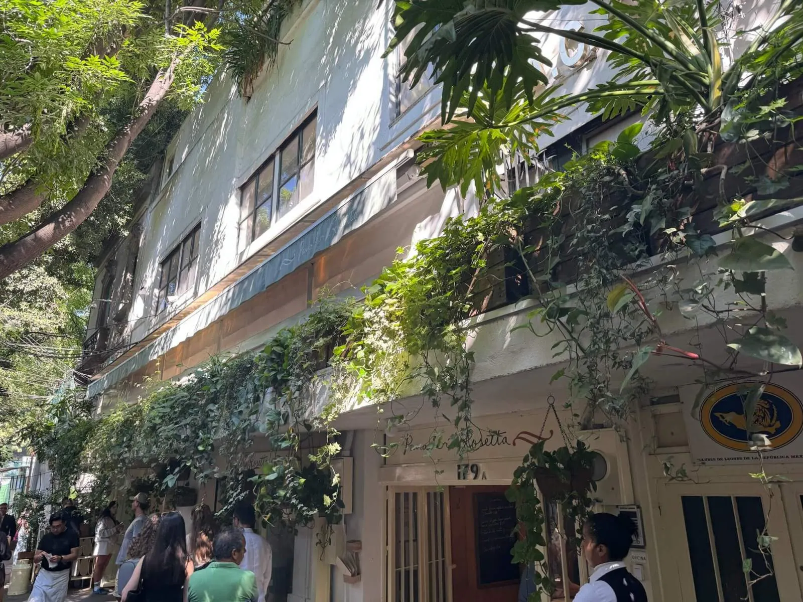
We stayed in Hotel Stanza in Roma Norte, and spent the day walking around the Condesa/Roma Norte neighborhood. It’s a cute, trendy town, and clearly a touristy area – we passed by several hotels and lots of Americans. I loved the colorful buildings and the streets lined with leafy trees. There are several cute coffee shops, some of which gave us strong L.A. vibes (and L.A. prices). My friend had heard about Panadería Rosetta through Instagram, so we went there to get breakfast, but the line was quite long, so instead the first Mexican food I ate was street tacos! They were pulled pork/pork tacos, which were very flavorful, and I really liked the chile sauce. We stopped at another coffee shop – the coffee here was noticeably distinct—they made the almond milk themselves! It was less sweet too. We walked through Parque Mexico, a large park with a playground and several large birds. We also stopped at a cute bookstore, Cafebrería El Péndulo, which offers both English and Spanish books. Libreria Rosario Castellanos is another bookstore I was recommended.
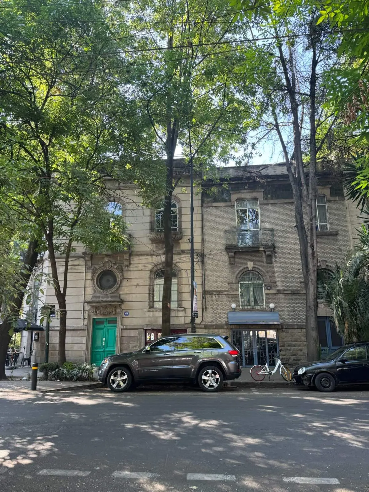
If you’re able to get tickets in advance, I would recommend going to Casa Luis Barragan, the architect’s house, which was supposed to be super aesthetic inside. We weren’t able to get tickets, but were hoping we would do a walk-in. Our hopes were dashed – even though the place didn’t seem all that crowded, they wouldn’t make an opening for us. They let us wander the bookstore and the garden though, which had a nice rooftop view of the city.
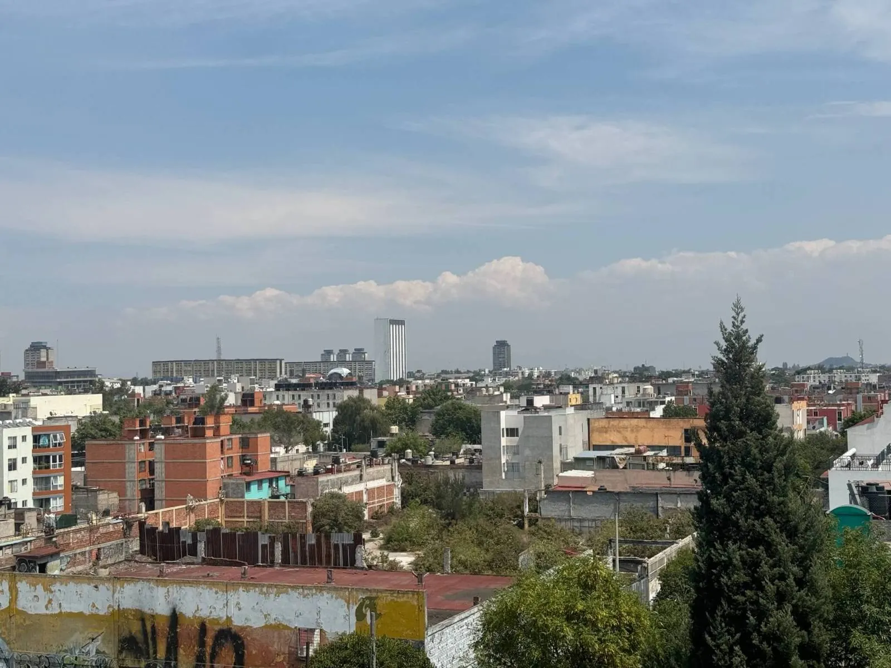
Biblioteca Vasconcelos is definitely worth visiting. It’s a spacious, grand library where the bookshelves are designed to look like they’re floating. It was so quiet and cool in there, compared to the chaos outside. It would be a great place to study (or nap).
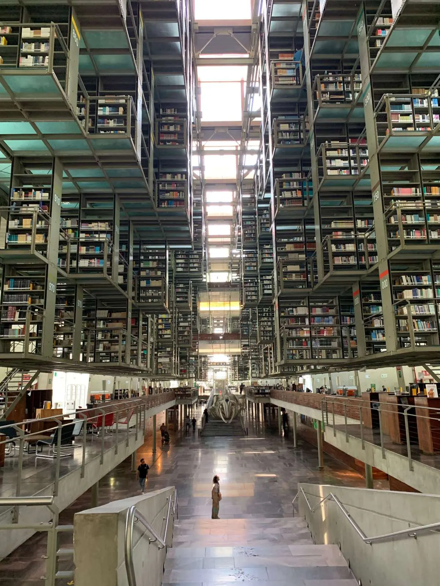
While crossing streets felt kinda sketchy (pedestrian signs can be lacking), I felt super safe walking around Roma Norte at night — there were lots of people out and about, and the neighborhood brought a fun nightlife vibe. L.A. needs a neighborhood similar to this! We went to Taquería La Califa for dinner (has multiple locations) – would recommend their guacamole (it was simple, with no onions or tomatoes or anything added other than cilantro, and you could tell the avocado was fresh), lettuce-wrapped tacos, and grilled cactus leaves (nopales) (pictured below). I don’t think I’ve ever had cactus leaves — they’re meaty, like jackfruit, and slightly sour, and super tasty. Also, the churros and consuelos (churro ice cream sandwiches – pictured below) at El Moro are a must try! There are locations throughout the city.
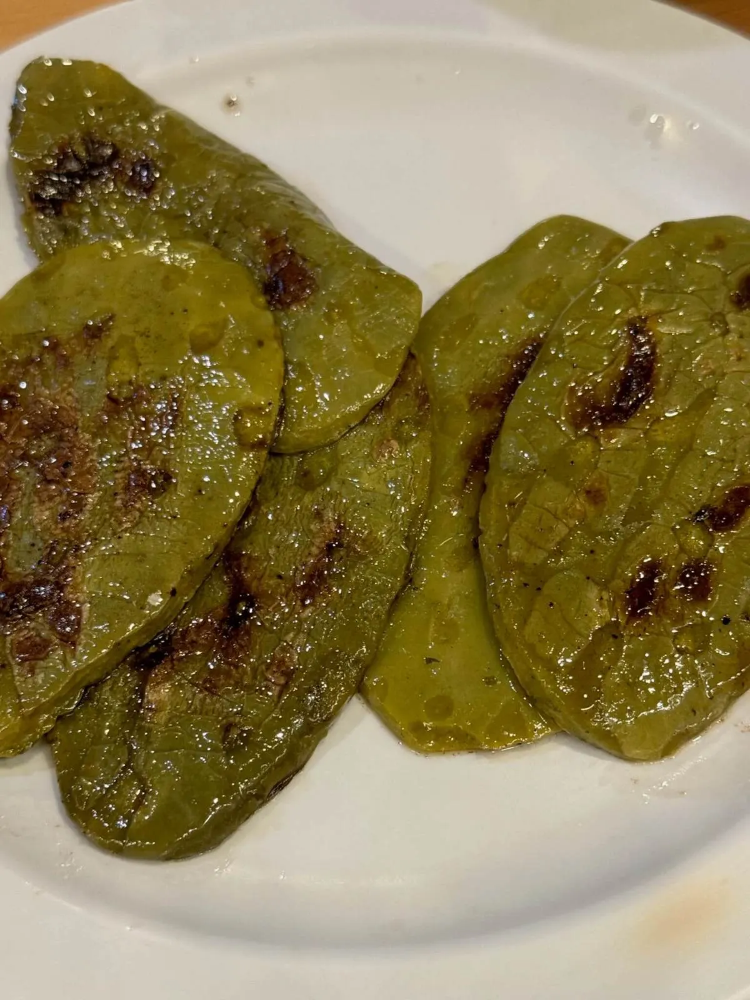
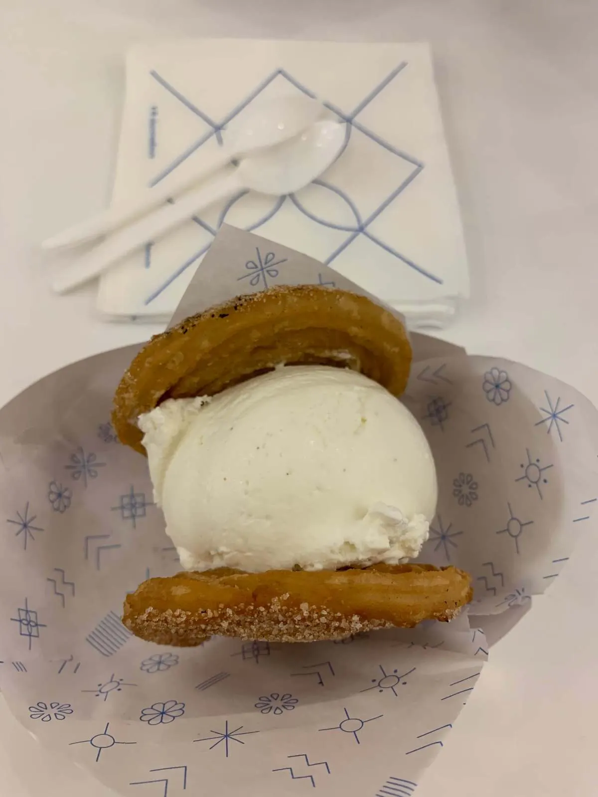
Lucha Libre: A very unique Mexican experience! Lucha Libre is a choreographed professional wrestling match among (very muscular and some good-looking) luchadores who are dressed in costumes. The show, which takes place at Arena Mexico in Roma Norte, is about 2 hours long, with 5 rounds of fighting. The energy in the arena was impressive. While the wrestling itself seemed uncomfortably aggressive at times (kinda like the Super Bowl), it was fun because the audience gets really into it, cheering for the “good guys” and cursing and booing for the “bad guys.” The show is on Tuesdays, Fridays, and Sundays – we went on a Friday at 8.30pm. They don’t let you bring in any food or drinks, so make sure to finish those before going in. We bought tickets in advance on Ticketmaster, but you can also buy them there in person, especially if you don’t care so much where you sit. We got seats in one of the front rows, so we could see the action close up, but I think the higher-up seats would’ve been nice too to get a more bird’s eye view of the action. People walk down the aisles selling food and drinks, and they also expect you to tip the person who shows you to your seat, so make sure to bring some extra pesos. Highly recommend going for the experience!
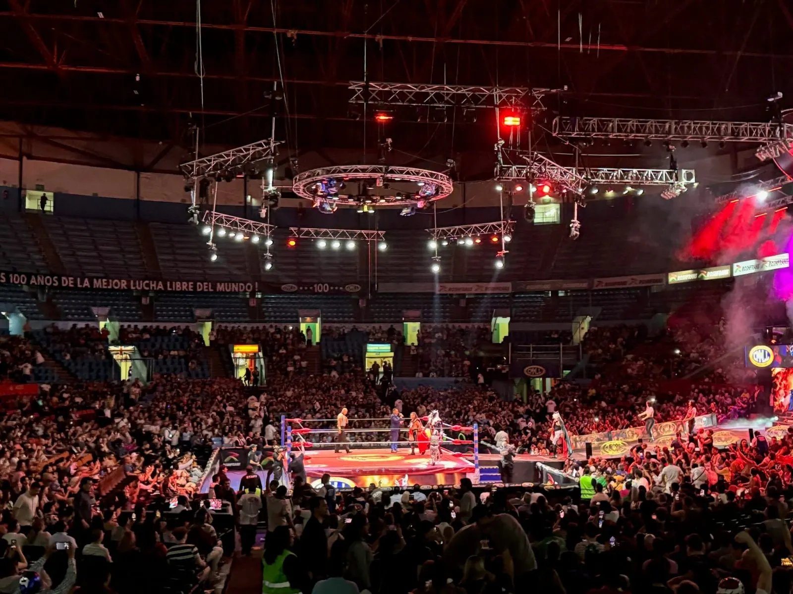
Day 2: Teotihuacán & Zócalo
We started the day with breakfast at Antonella Caffe across the street from our hotel. I had a beetroot juice (jugo de betabel) – the juices here are more affordable (about $5) than in the U.S., and delicious!
Morning: Teotihuacán pyramids
Located northeast of Mexico City, it’s about a one-hour drive to get to Teotihuacán, so it was insightful to go out of the city and see a little more of Mexico.
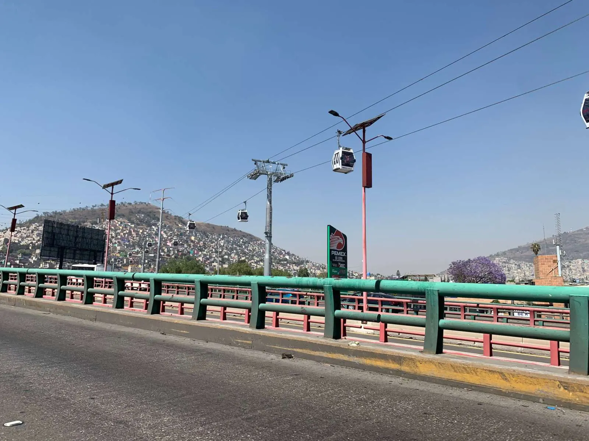
Teotihuacán is a vast Mexican archaeological site with Mesoamerican pyramids built in the pre-Columbian Americas. The city became the most powerful and influential city in the region by 400 A.D. but collapsed in 750 A.D. By the time the Aztecs found the city in the 1400s and named it Teotihuacán (“birthplace of the gods”), the city had been abandoned for centuries; thus, its history and culture largely remain a mystery. Walking on the Avenue of the Dead, you can see the Sun Pyramid and the Moon Pyramid, and pass by multiple smaller temples for other gods. The Sun Pyramid is the third largest pyramid in the world, and might actually have been a temple to worship the rain god, not the sun god (they apparently sacrificed children to the storm gods).
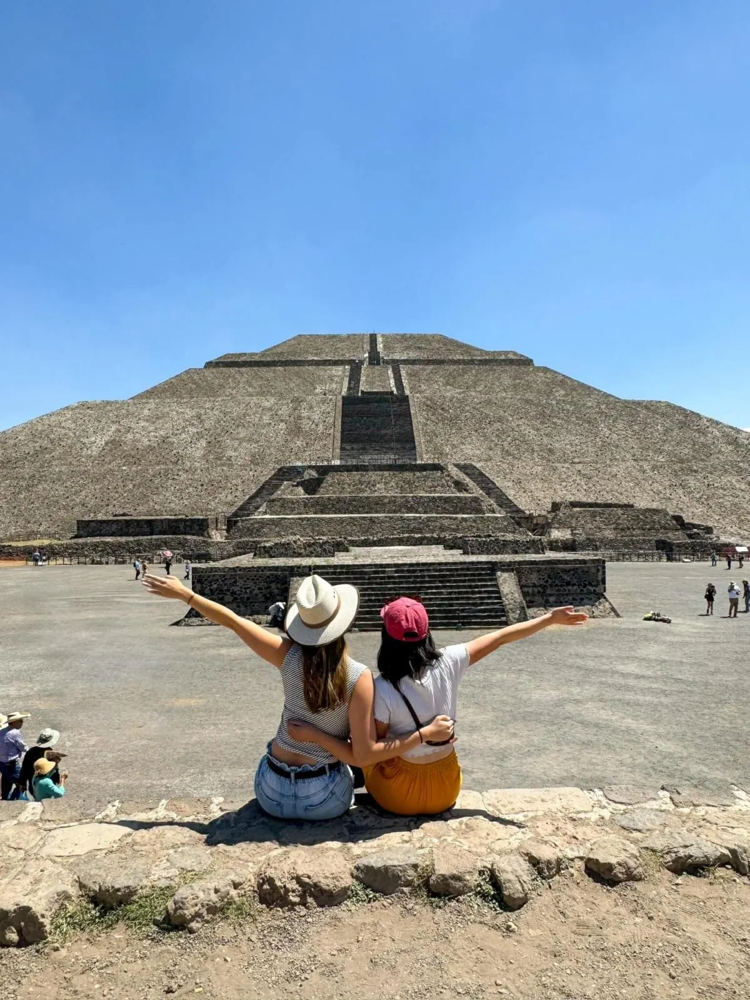
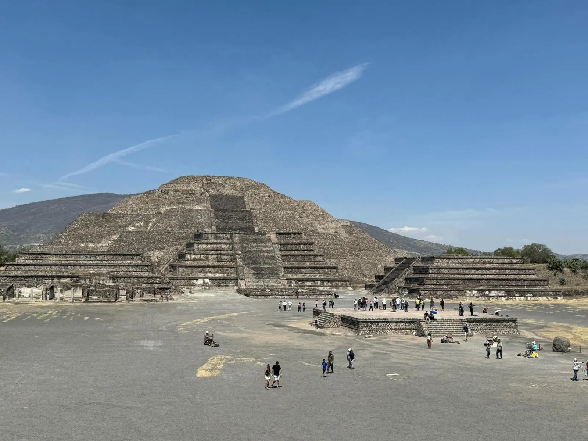
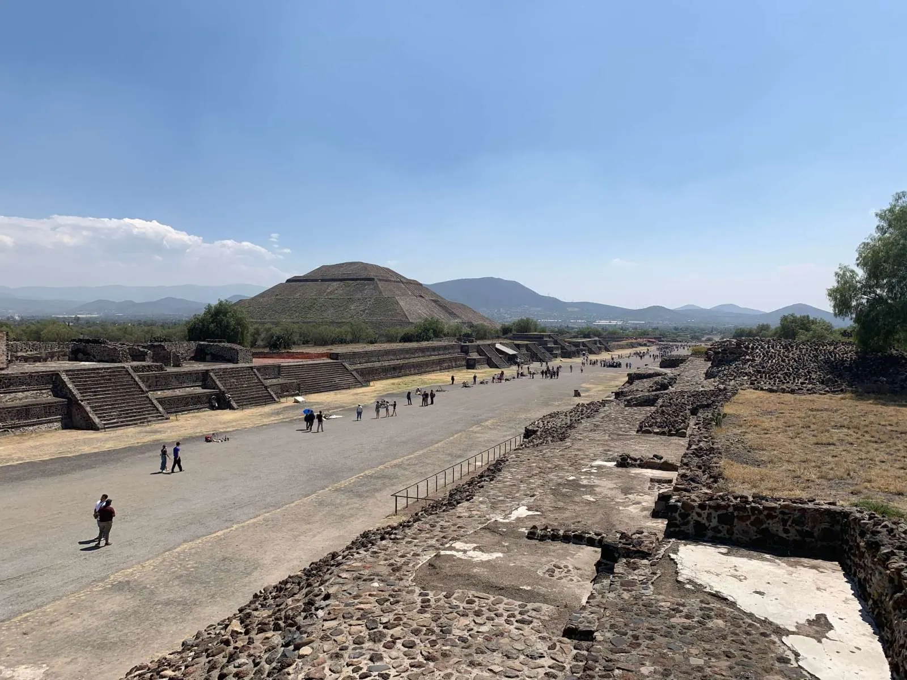
We got a short tour at the site – we saw an agave plant which they use to make drinks like pulque (first alcohol drink in Mexico), tequila, and mezcal, and tried some samples. We learned about obsidian and how they had control of the obsidian mines.
The entrance fee is 95 pesos. Unfortunately you can’t climb the pyramids anymore (for preservation purposes), but there was still plenty to see. It was burning hot the day we went there, so hats, sunglasses, and sunscreen are a must. I felt a little sorry for the vendors who sit out there under the sun all day trying to sell us trinkets (but not the one who tried to sell us a small bracelet for 80 dollars, claiming that it was real silver!). But I did buy some nice obsidian souvenirs (can definitely negotiate prices here!).
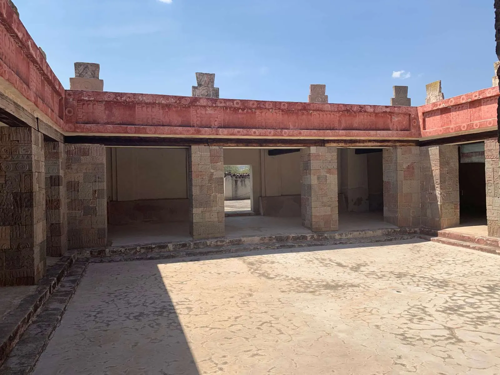
Afternoon: Zócalo (historic center)
Zócalo is the historic center and main square of the city (formally called the Plaza de la Constitución). In pre-colonial times, it was the main ceremonial center in the Aztec city Tenochtitlan.
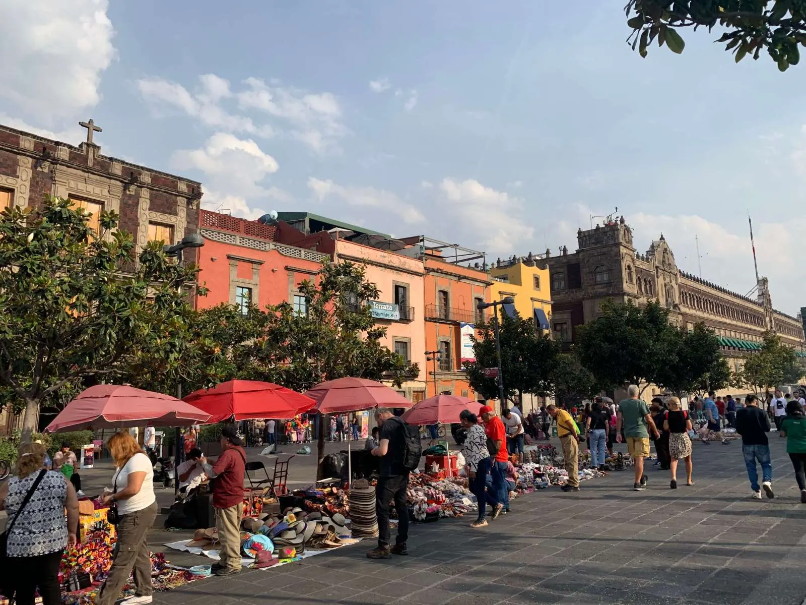
The House of Tiles is a beautifully decorated tiled former house owned by wealthy families until the 19th century, and is now a restaurant. There’s not much to see inside, so we just took pics from the outside:
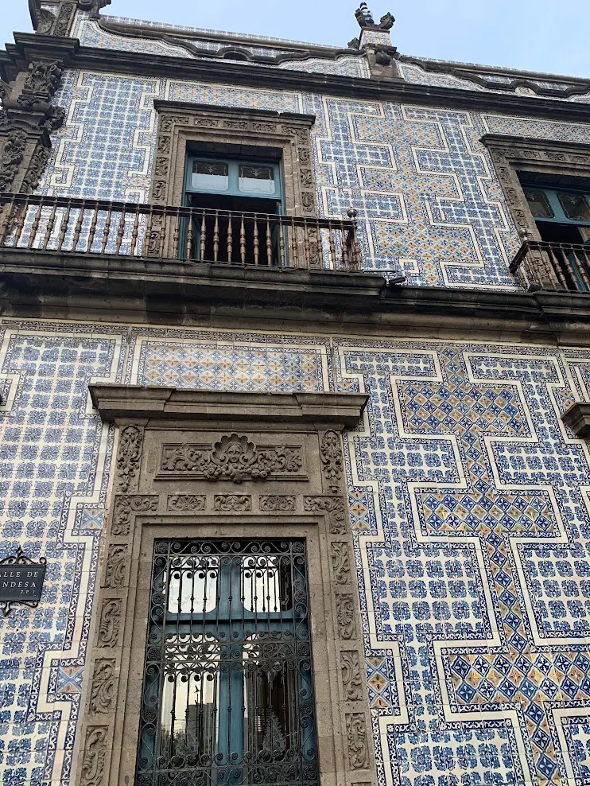
The Palacio de Bellas Artes has a museum inside which closes at 5pm. Other than that, there’s not much to see inside, unless you watch a Mexican folklore ballet (which I would’ve loved to see – they perform 3 times a week).
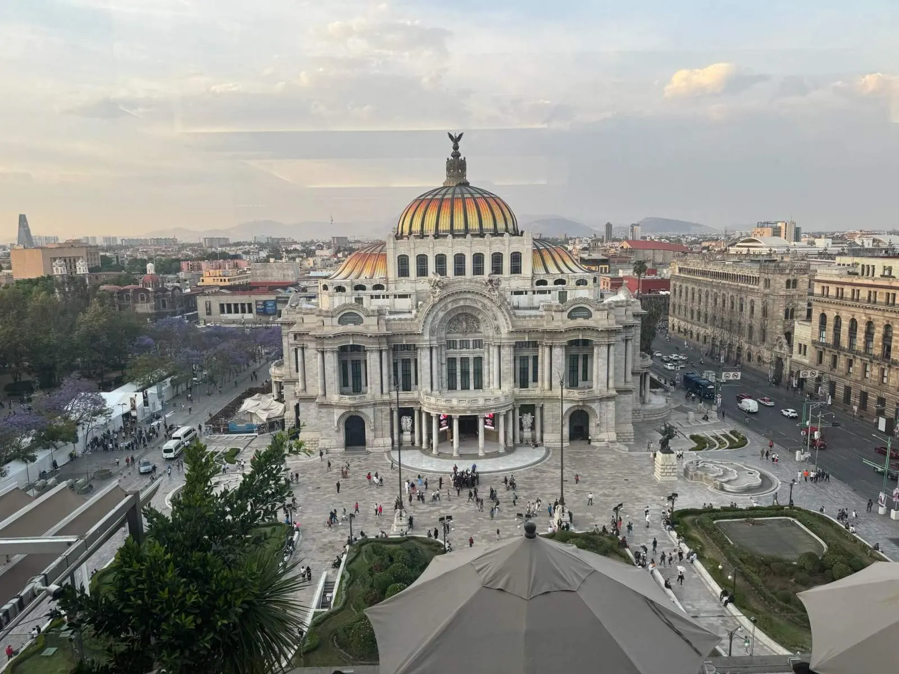
The Catedral Metropolitana is one of the oldest and largest cathedrals in Latin America. It was built between 1573-1813, with inspiration from the Gothic cathedrals in Spain. It is impressively ornate and grand.
In the main plaza you can see the very large Palacio Nacional. Even though Los Pinos, in Bosque de Chapultepec, is the official presidential residence, the current President, Andrés Manual López Obrador, lives in the Palacio Nacional in order to be “closer to the people.” So it was surrounded by security and we couldn’t go inside – but is still nice to look at from the outside.
The downtown area was a lively place to walk around. We passed by several street vendors selling churros and fruit. There is an endless number of museums, none of which we had the time to visit, but if we had more time we probably would’ve visited the Templo Mayor museum, which houses artifacts from the Tenochtitlan site and provides an overview of Aztec, aka Mexica, civilization.
There were a lot of American chain stores. We stopped at a small cathedral and bought cookies from a mother sitting right outside it: she was making them on a small griddle, so we had them warm and fresh. They were soft like pancakes, simple and so delicious, with just 4 ingredients: corn, butter, sugar, and vanilla.
We had dinner at Azul (back in La Condesa), identifiable with its blue decorative lights outside. It’s a fancier restaurant, but worth it if you want to try some delicacies: ant eggs (escamol) (left pic below) and grasshoppers (chapulines) (right pic below)! You eat them with guacamole and a tortilla, like a taco. The grasshoppers, crushed into pieces, were very salty and I personally didn’t find them most appetizing on their own, so eating them with guac was a must; the ant eggs tasted pretty good on their own and kinda tasted like chicken. Entree-wise, I liked their tortilla soup and mole. They also had a mango-only menu (!!) – would highly recommend the mango juice. In general, mangoes are a must try in Mexico – you can find them at street vendors throughout the city!
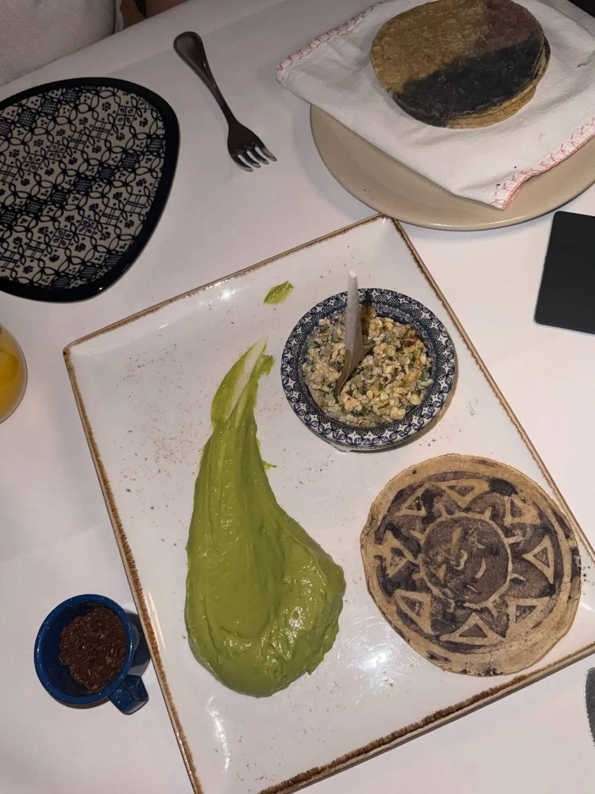
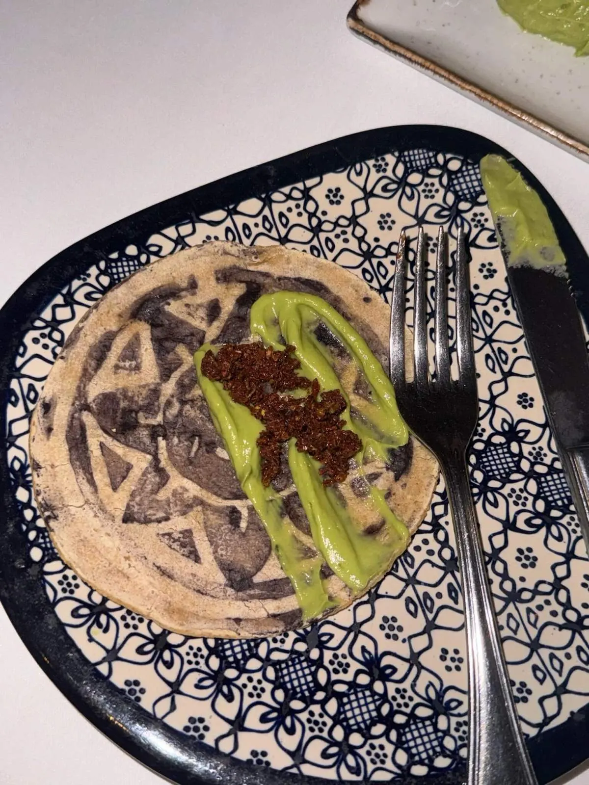
Day 3: Coyoacán & Canal Ride at Xochimilco
Morning: Coyoacán
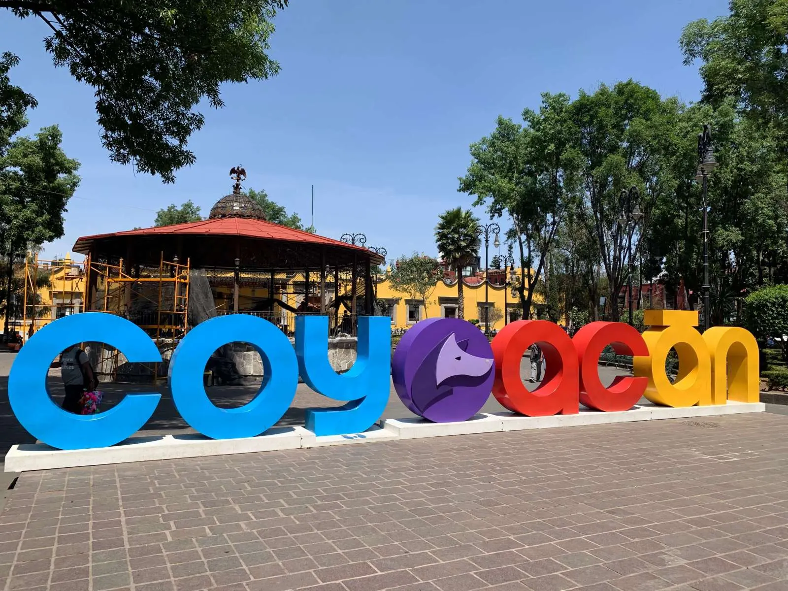
The Frida Kahlo House (La Casa Azul) is a must-visit that you want to book reservations in advance for since it’s pretty popular! Frida Kahlo, the famous Mexican painter, was born 1907 in Mexico City. I didn’t know much about her other than that she was famous for her self-portraits, and was able to learn a lot more about the tough circumstances she went through and appreciate her artwork even more. She was married (twice!) to Diego Rivera, another famous Mexican muralist who was 20 years her senior. She suffered through many illnesses, including polio and a horrific car accident when she was 18 that left her unable to have children and resulted in her undergoing at least 22 surgeries. She took up painting during her long recovery in bed—her mother put a mirror at the foot of her bed so that she could paint self-portraits.
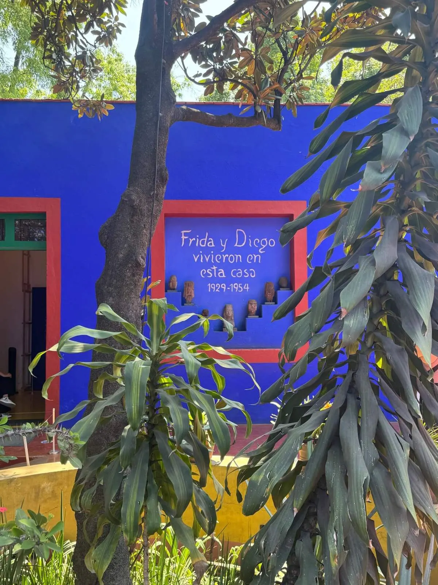
We visited her house (now turned museum), which was quite beautiful and spacious with a large garden, and the buildings were painted a deep, rich blue. She owned a lot of pets, including tortoises, parrots, Mexican hairless dogs, and monkeys! She left 21 pieces of artwork there, which were on display throughout the house and could be identified by their double wooden frames, including her famous Vida la Vida with the watermelons, her last painting before she died.
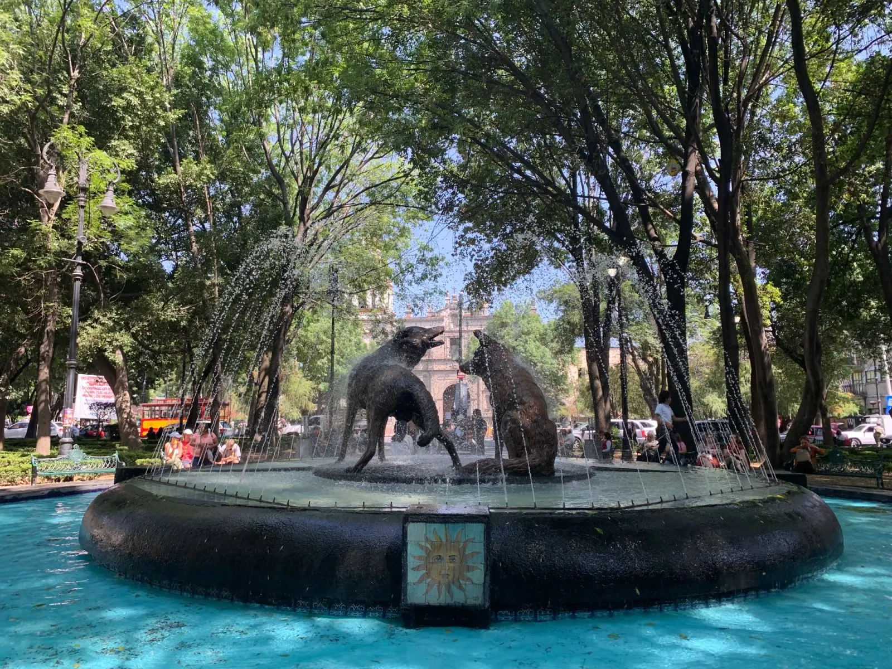
We had lunch at the nearby Coyoácan market, a large indoor market with stalls selling colorful trinkets and food. I had a chicken tamale with guava juice (agua de guayaba). Would then highly recommend getting ice cream at El Kiosko down the street—try the aguacate and uva (grape) ice cream! The Mercado Artesanal Mexicano, another large, mostly-outdoor market, is also nearby.
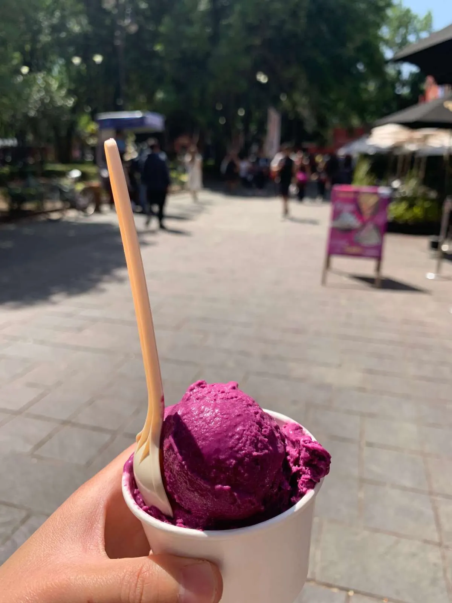
Afternoon: Canal Ride at the Floating Gardens of Xochimilco (so-chee-mil-ko)
The canals were once used for transport because the Aztec capital of Tenochtitlan was built on a lake, but now are just used for tourist adventures. Tenochtitlan, now Mexico City, was the Aztec capital until Cortés conquered it in 1521. At its peak, it was the largest city in the pre-Columbia Americas, and today, the site contains what remains of the water, boats, and floating gardens of the Mexica (Aztec) capital.
The canals are a 30 min – 1 hr drive from Coyoacan, depending on traffic. I would recommend navigating to the Embarcadero Nuevo Nativitas. Our Uber driver recommended that location and there’s a sign that clearly posts the price, so it’s more standard. When we went it was 600 pesos for an hour (I would recommend doing this with a large group so each person pays less! And it might be more fun too. We saw groups celebrating birthdays, anniversaries, etc.). But keep in mind that they also request a tip of 300 pesos, and if you buy food or drinks, or songs from a live mariachi band, it’ll cost extra.
It was a very touristy and interesting experience. You sit on these colorful gondola style boats called trajineras, and 1-2 people guide it with a large stick (comparable to punting in England). It was like a colorful version of the Venice canals. Along the canals are flower markets, and boats will come up to you selling snacks or tequila, or music from a live mariachi band! We got one song for the experience, paying 220 pesos for a live version of Cielito Lindo.
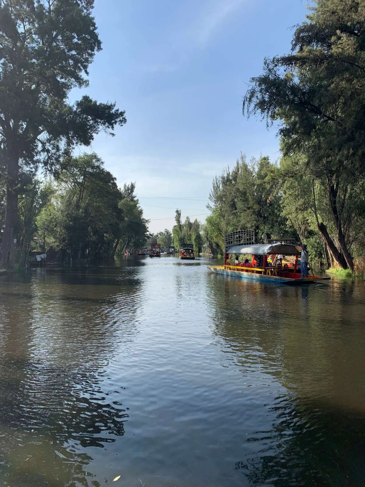
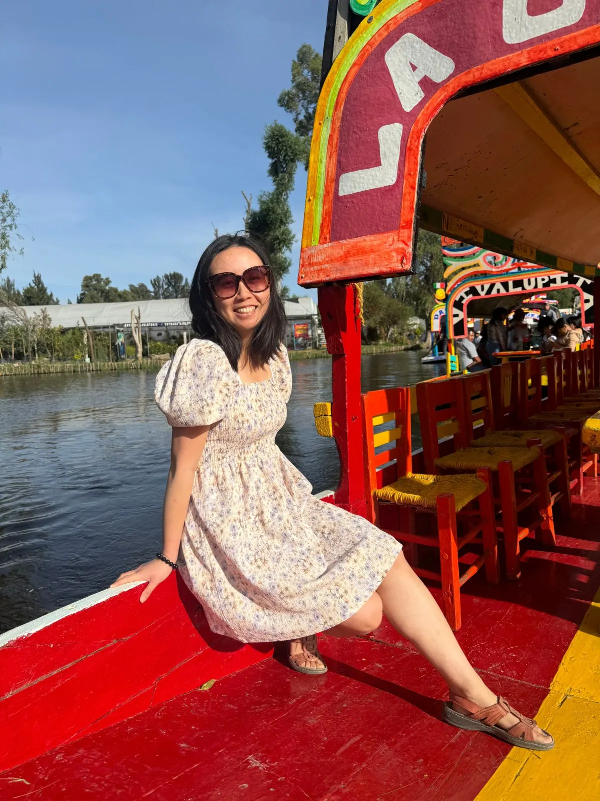
We went back to Roma Norte for dinner at Mercado Roma, a large indoor market with international cuisines.
Day 4: Bosque de Chapultepec & Polanco
You can spend most of the day at Bosque de Chapultepec (Chapultepec Forest), a large green city park which used to be a retreat for Aztec rulers. Chapultepec Castle is a must-visit. It became the official residence of Mexico’s presidents until 1934, when Los Pinos, in another area of the park, became the presidential residence (though the current President lives in the Palacio Nacional). It costs 95 pesos to get in, but if you show your student ID (or a photo) it’s free!
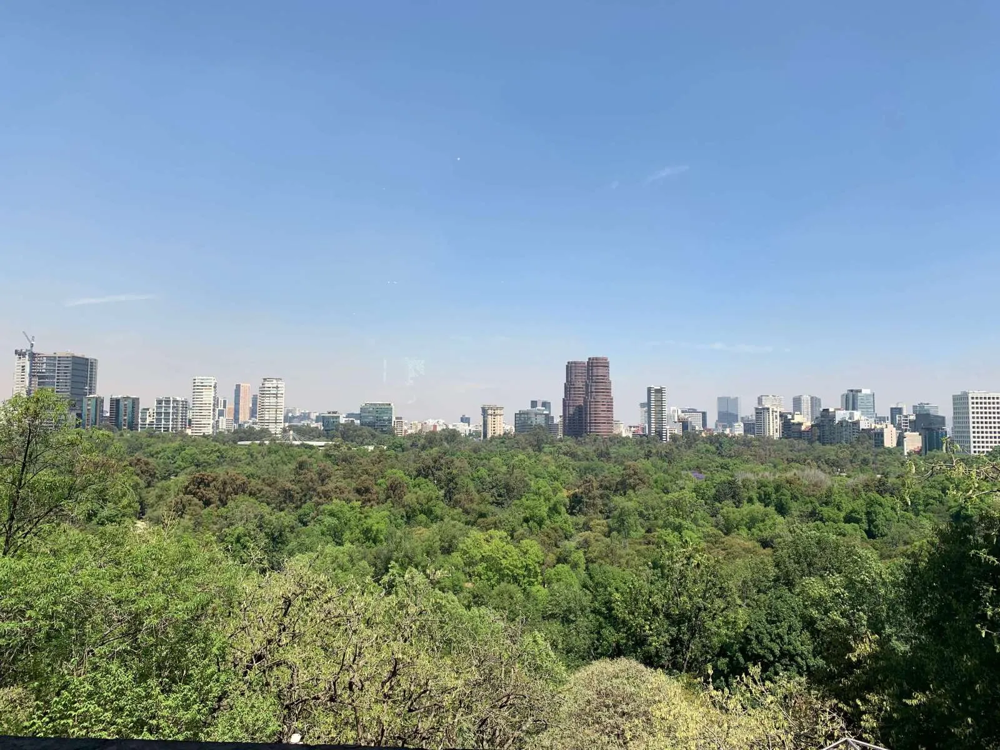
In the castle you can see the grand, intricately decorated rooms and beautiful gardens that royalty lived in, and gorgeous views of the surrounding forest and city. Unfortunately many of the royalty were executed or exiled, so didn’t have such a happy ending. For example, after the Mexican-American War, an Austrian archduke (Maximilian I) became emperor of Mexico for 3 years and lived in the castle, before being executed by the Mexican Republic in 1867, essentially marking the end of the monarchy in Mexico.
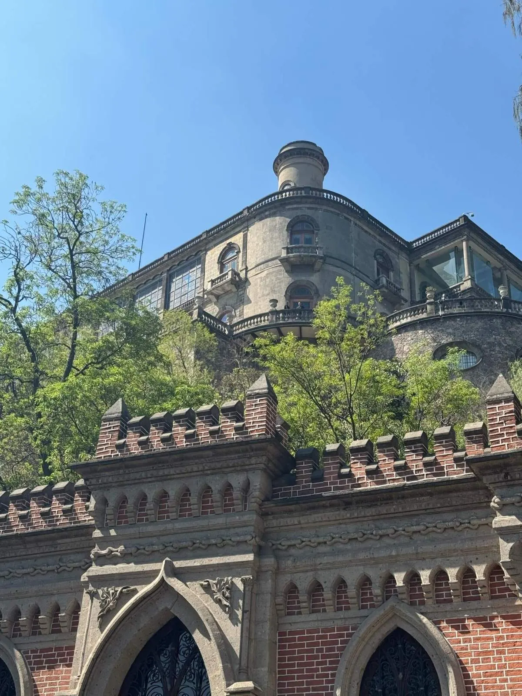
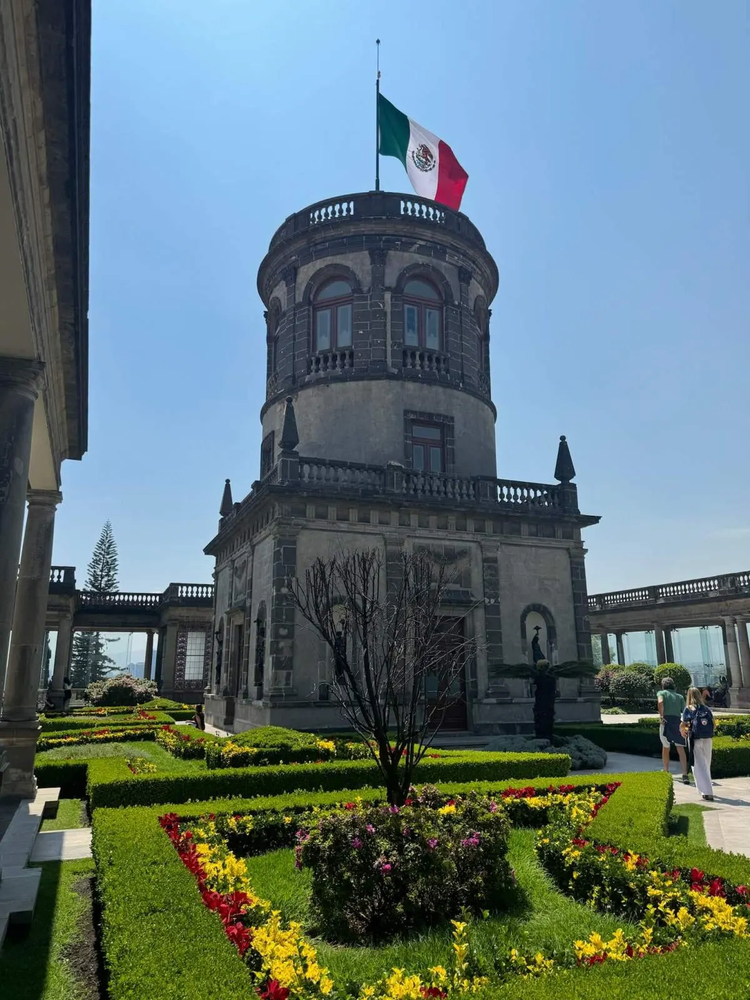
There’s also a museum portion in the castle, where you can learn about the founding role of Benito Juárez, president of Mexico from 1858-1872 and the first democratically elected indigenous president in postcolonial America, and the infamous, controversial rule of Porfirio Díaz, dictator and President of Mexico from 1876-1911, just before the Mexican Revolution.
National Museum of Anthropology. A large museum that houses the world’s largest collection of ancient Mexican art. Highlights include the Sun Stone or Aztec Calendar, and a replica of the Mayan king Pakal’s tomb. Tickets cost 95 pesos, and we spent 3 hours there learning about the history and cultural areas of Mexico from the Teotihuacan to the Aztecs (aka Mexica) to the Mayans, and areas including Oaxaca and Veracruz. The most disconcerting thing was learning about the ball game, where players struck a rubber ball with their hips and hit them through hoops, and sometimes was played for religious sacrifice.
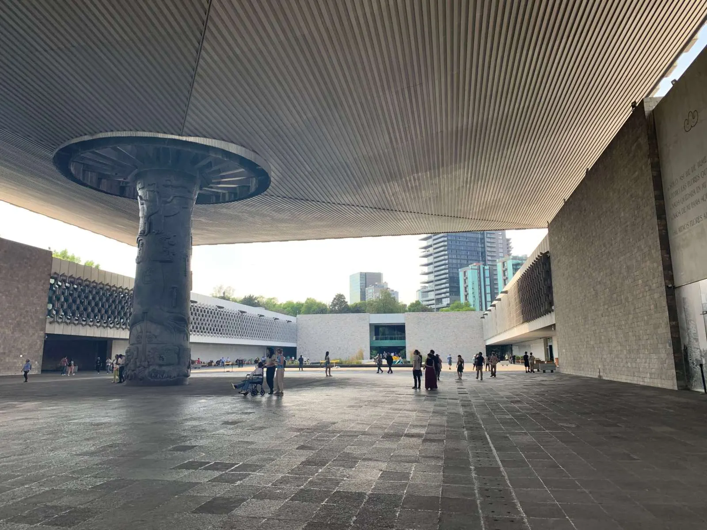
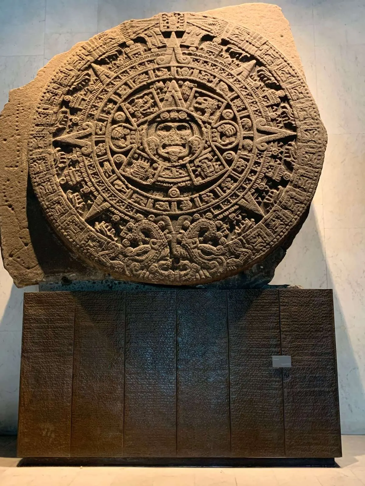
Also heard the Museo Tamayo Arte Contemporaneo is cool, but we didn’t have time to go.
We had lunch at Taqueria Selene, which is about a half mile from the castle — would recommend their tacos al pastor and bistec tacos!
Polanco
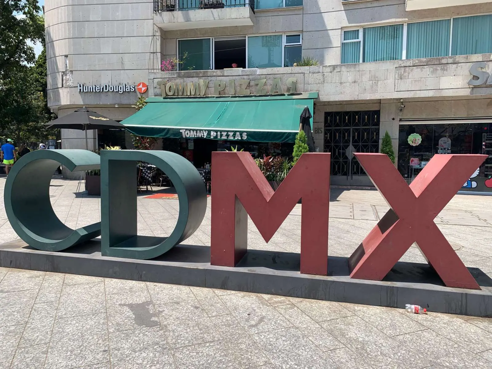
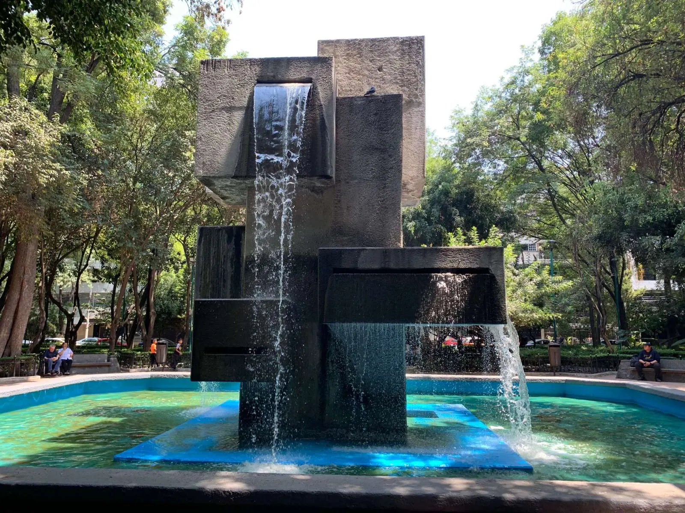
Roma Norte/Condesa are very nice neighborhoods, but Polanco was very much a bougie area. The large houses were gated, and we did some window shopping at a couple malls with luxury brands (American luxury brands are just as expensive, if not more expensive, than in the States, so don’t be fooled that you’re getting a better deal here!). It also seems like a corporate downtown area, with several corporate skyscraper buildings.
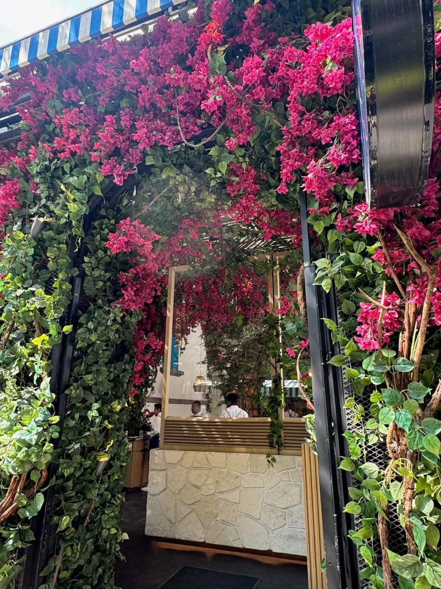
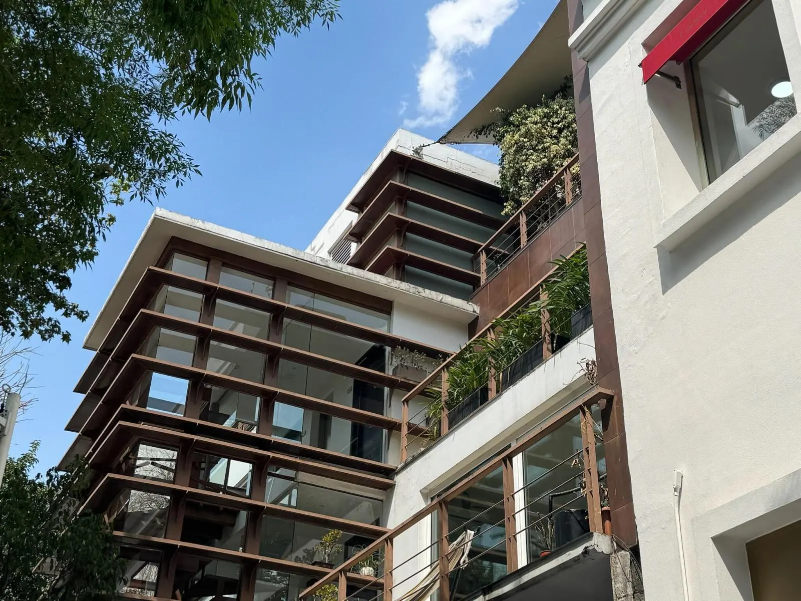
We started at Plaza Uruguay and walked down the streets, past fancy shops and restaurants. We walked through Lincoln Park which contained a statue of Lincoln, a gift from the U.S. to Mexico. We went inside a bird sanctuary which had many birds including a parrot that could say hola and a cute macaw parrot couple. We got some fresh fruit (star fruit, mango, and strawberries) at the outdoor markets, where stalls also sold jewelry and colorful summer dresses.
I would also recommend checking out Museum Soumaya, a privately owned, cool-looking museum with modern art, European and Mexican art, sculptures, and replicas of David and other famous statues (pictured below), as well as Antara, an outdoor mall right across the street from the museum, with more bougie shops and restaurants, and some nice and tart froyo from a stand in front of the wall filled with window plants.
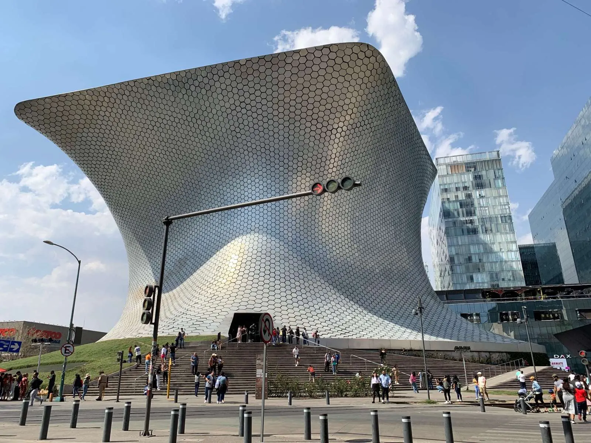
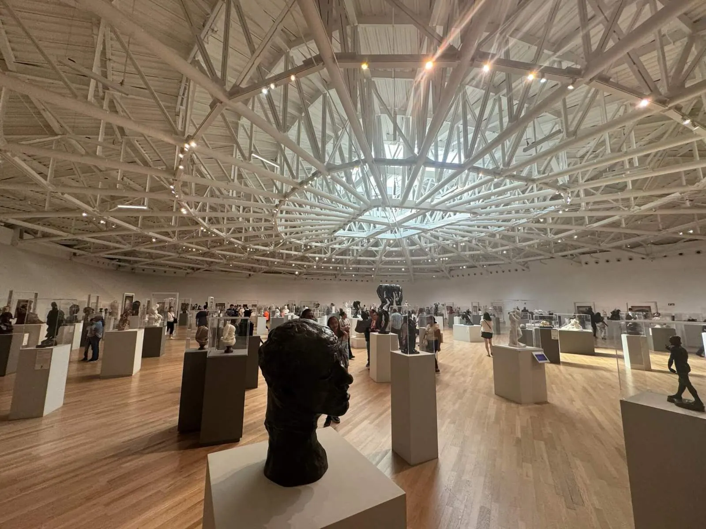
For food, was recommended Salon Tenampa and Pujol, a fancy, elegant restaurant where you need to book your reservations way in advance (calling the restaurant can be more effective than booking online, according to my friend, but both work). I sadly wasn’t able to get reservations, but apparently it is a must-try – for the next time!
Here are some more food/drink places I was recommended if you’re up for more adventure:
- Coffee shops: Cucurucho, Cafe Milou
- Food: Bazar del Oro (market), El Tizoncito (tacos), Helena Fonico (gastronomy), Maizajo
- Bars: Ololo, Cafe Tacobar, El Sirenito and Salon Gardenia (drag shows), Jardín Paraíso, Palapa Cantina Caribeña (Latin beats), Departamento, 11:11 (piano bar in Polanco), La Jacinta, Myst (nightlife and performance), Porter (bar behind the restaurant), Toledo rooftop, Supra, Gin Gin, Parker & Lenox (speakeasy with live music), Ilios
Want more of Mexico? Check out my blog on Playa del Carmen!